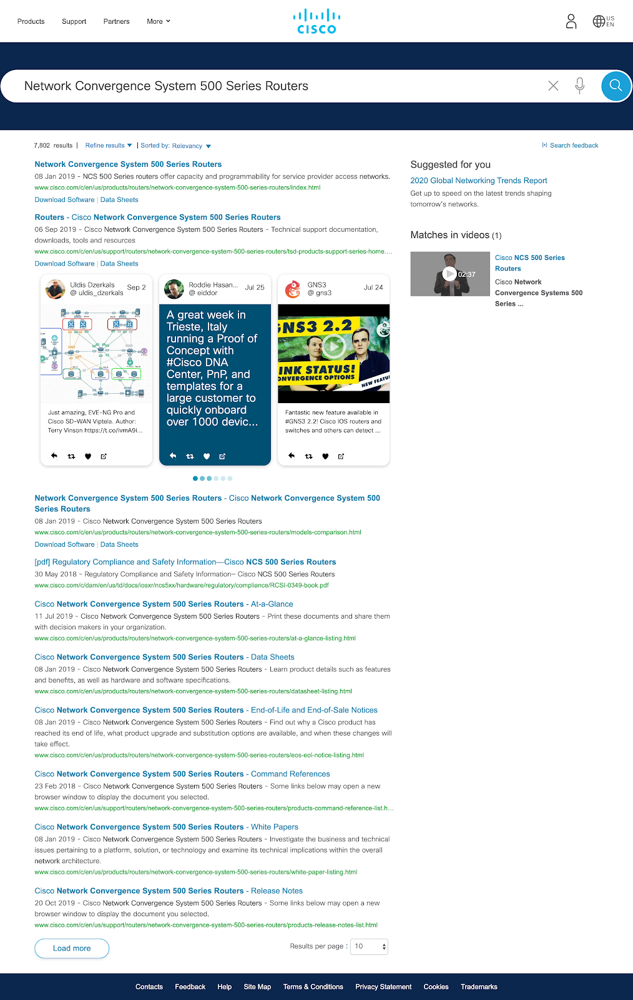

Background
When I interned at Cisco during Summer 2019, their Customer Experience Team was working on the Customer Portal (CP),
an application that consolidates and organizes Cisco product resources for clients.
The CP provides a step-by-step repository of resources (i.e. PDFs, webinars,
license training, etc.) for all of Cisco’s products.

How troubleshooting used to look for Cisco clients
User Problem
Cisco clients are frustrated with searching for and getting product support. Opening up a TAC case is costly and inefficient.
Opportunity
Research, design, and prototype a mobile app to improve how clients consume product support.
Because the CP was an unreleased product at the time, it was necessary to collect preliminary data that would allow us
to do some needfinding and discover the latent needs and opportunities where a mobile app can fill in gaps for the user.
Research
Along with some members of the CX team, I flew down to San Diego to attend the Cisco Live!
conference and conduct user research with Cisco clients.
We conducted 12 user interviews to understand the work of network engineers and find any edge cases to account for.
Method
- 12 participants
- 15-20 minutes each
- 50% questions focused on mobile usage in enterprise landscape
- 50% questions focused on expectations regarding CP mobile application

Helen and I livin' it up at Cisco Live!
Insights
We met users with varying job titles, from network architects to customer-facing consultants, and listened to their
mobile usage experiences and expectations. The most abundant source were the network engineers who are the most
attended job title at the conference. Knowing this, we decided our main
target audience was the network engineers, who are predicted to engage the most with the CP
due to their direct interactions with Cisco products.
Here are three main insights that helped me to anticipate the needs of users.
With the insights from our research coupled with our given task, I devised this problem statement to focus our solutions.
Problem Statement
How might we expand our current web platform to mobile so we can improve network engineers' accessibility to the CP?
Planning
I needed to restructure this vast CRM tool into a compact mobile app, so I first set out to lay out the barebones of the CP. I wrote
out all the possible user flows and translated the navigation to be adapted to mobile. I also began exploring how to translating the
web interactions into mobile interactions.
How to prioritize tasks, how to navigate, how to re-architect the IA, and possible mobile tasks
There were a number of possible user flows to explore. My co-intern Helen and I divided our work up by features (I took Home Page and Lifecycle)
and each crafted a user story that incorporated our research insights and communicated the value our solutions brought to the user.
After considering the numerous flows and user needs, I constrained my project to focus on these key design opportunities.
Design Opportunities
Discovering and designing for mobile-first interactions (e.g. augmented reality, hamburger/kebab menus, etc.)
Influencing the design of the web application and building a seamless transition between mobile and web
User Journey
To better understand and explain user behaviors, I wrote a user journey detailing the day-to-day of a network engineer.
This story incorporates the problem statement and showcases how a more accessible CP benefits
the user, physically and within the app. The user journey also helped focus on which user flows were key.
 (1) Ned is a network engineer whose company has acquired a new site, and he is responsible for setting up its network.
(1) Ned is a network engineer whose company has acquired a new site, and he is responsible for setting up its network.


 (2) He scheduled a webinar from his laptop while at work to learn about setting up his product and plans to watch it later.
(2) He scheduled a webinar from his laptop while at work to learn about setting up his product and plans to watch it later.
 (3) While taking the CalTrain home, he checks his phone and watches the webinar on the commute from work.
(3) While taking the CalTrain home, he checks his phone and watches the webinar on the commute from work.
 (4) Ned thankfully gets off at the right stop - he’s admittedly missed it a couple times.
(4) Ned thankfully gets off at the right stop - he’s admittedly missed it a couple times.
 (5) The next day, Ned goes to the network site to set up his product and pulls out his phone to review the video.
(5) The next day, Ned goes to the network site to set up his product and pulls out his phone to review the video.
 (6) He uses his computer to pull up the command line interface but cannot access the instructions through his computer.
(6) He uses his computer to pull up the command line interface but cannot access the instructions through his computer.
 (7) He pulls out his phone and walks through the mobile app again to the Lifecycle page, where he finds the relevant PDF for setting up his product.
(7) He pulls out his phone and walks through the mobile app again to the Lifecycle page, where he finds the relevant PDF for setting up his product.
 (8) Ned successfully uses his phone and computer in parallel to efficiently and correctly set up his network hardware. He checks off his in-app to-do list.
(8) Ned successfully uses his phone and computer in parallel to efficiently and correctly set up his network hardware. He checks off his in-app to-do list.
 (9, 10) The aforementioned potential AR functionality makes finding documentation for a product easier by scanning a barcode.
(9, 10) The aforementioned potential AR functionality makes finding documentation for a product easier by scanning a barcode.